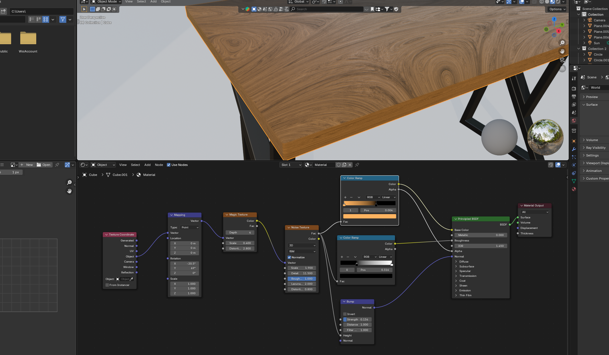
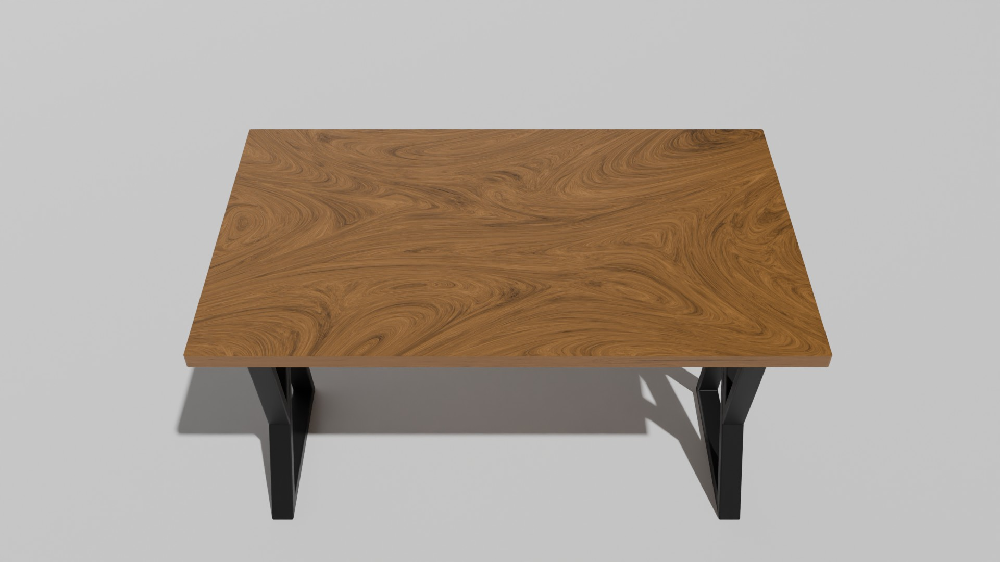

СТОЛ LOFT K#1
Описание модели
Модель стола была создана на основе реального опыта. Летом был изготовлен стол из спила дерева в стиле loft с черными ножками. Однако конструкция имела недостаток — стол был частично закреплён к стене, из-за чего терял мобильность и воспринимался скорее как стационарная столешница. В рамках проекта была поставлена задача разработать 3D-модель стола, который будет более удобным, устойчивым и визуально гармонично вписываться в интерьер комнаты. Размер столешницы составляет 160?60?70 см (ширина, длина, высота). Моделирование выполнялось сразу в high poly без промежуточных этапов упрощения геометрии.

Концепция и форма
Основное внимание было уделено разработке формы ножек, так как стандартные прямые конструкции выглядели невыразительно. В качестве основы были использованы две треугольные формы, которые были состыкованы таким образом, чтобы образовать параллельные опоры. Одна часть конструкции выполняет функцию опоры для пола, а вторая служит креплением для столешницы. Такое решение позволило сделать конструкцию более устойчивой и визуально интересной.
Моделирование
Модель создавалась сразу в high poly формате с детальной проработкой всех элементов. Основное внимание уделялось чистоте геометрии, плавности линий и корректной передаче формы конструкции. Все элементы подгонялись таким образом, чтобы сохранить пропорции и обеспечить реалистичность объекта.


Материалы и текстуры
Отдельное внимание было уделено материалу дерева. Настройка текстуры заняла значительное время, так как требовалось добиться реалистичной передачи структуры древесины, цвета и отражающих свойств поверхности. Также были настроены материалы для металлических ножек с акцентом на матовую поверхность.
Визуализация
На финальном этапе была выполнена настройка освещения и рендер. Основная задача заключалась в том, чтобы подчеркнуть форму конструкции и реалистичность материалов. Итоговое изображение демонстрирует объект как полноценный элемент интерьера в стиле loft.

